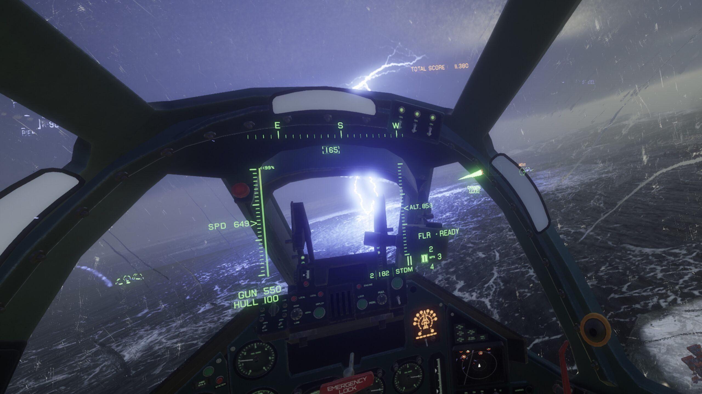

To explain it really in my own terms, Project Wingman is an indie, arcade flight game. Project Wingman is what I describe to be a love letter for the hit video game franchise Ace Combat, which is similar in gameplay like Project Wingman.
There are two campaigns in the game: there is the base campaign, and a DLC that was exclusively for Playstation 5 called Frontline-59. There is also another mode called Conquest, which is a survival or wave based game mode that has you play through a series of missions and gets progressively harder.
In the base campaign of Project Wingman, you play as a mercenary pilot apart of the Sicario Mercenary Corps attached to the Hitman Squadron. Your tacname? Monarch.
The overall plot of the game takes place after a cataclysmic tectonic event that set off the Pacific Ring of Fire known only as "The Calamity". Fast forward about 400 years later, new powers arise and the world as we knew it is gone.
Such major powers were the countries of pacific that formed out of old governments, corporations, and military institutions. These collectively together formed a Confederation of core and vassal states known as the Pacific Federation.
At the start of the game, you and your squadron finish their last contract in the caribbean and end up blowing a Federation cargo filled with a volatile element of Cordium, which is an element that has saw prevalent use as a geothermal substance used to supply energy for many countries. The Pacific Federation just so happens to have a monopoly over it.
After the contract, You (as the mute pilot "Monarch"), your squadron, and the rest of the Sicario Mercenary Corps seek to intervene in the Cascadian Civil War in order to make a profit.
According to one of the Cascadian National Guard pilots, Stardust, the United Republic of Cascadia was an associate country of the Federation, until they decided to break off over fears of "federalization" and "feeding cordium to the war machine". If you aren't aware yet, the reason why the Pacific Federation seeks to want control over Cascadia is for their rich deposits of cordium in the country.
As you progress through the story, you and you squadron start to realize how much worse the civil war actually is, especially considering that in one event, an entire Cascadian city called Prospero gets flattened by cordium cruise missiles that ends up starting a SECOND calamity, and the situation completely devolves.
At some point during the Cascadian Civil war, Cascadia and the mercenary groups fighting the Federation gets the upper hand, after winning a furball over the Bering Strait. The situation turns real dire for the Federation, as a majority of their regular pilots deployed to fight in Cascadia have been almost completely wiped out (at the second the first mission of Frontline-59, it is implied there were only a dozen Federation active fighters still left).
Crystal Kingdom (Federation High Command) is forced to call upon an urgent deployment of all reserve divisions to be sent to reinforce the losses at the Bering Strait, but it is too late for the Federation. Many squadrons, including the Peacekeeper Squadrons (the Federation's elite squadrons sent to pacify any insurrection) were forced into a retreat and you, K-9A "Driver" and the rest of the K-9 Reserve Division were to be next on the chopping block.
But fortunately, you and your squadron gain the upperhand with Driver's superior flight skills carrying the way to victory and ensuring a safe exfil of any surviving Federation fighters.
Frontline-59 is basically a campaign where instead of fighting for the Cascadians (the supposed good guys) and the mercenaries, you are fighting for the Pacific Federation in a desperate attempt to ward off the invading Cascadian and Mercenary armies that seek to cripple the Federeration war effort by destroying key cordium geothermal facilities, which if destroyed, would theoretically put the Federation in a long cold winter.
The Conquest mode for project wingman is basically just a fun mode for you to command and conquer a squadron and lead them in missions, however perilous these may seem.
There isn't really a story for this one, other than using your headcanon and coming up with fun fanfics that expand on the lore of the game. But I have nothing much to say on this, other than the gameplay loop is to complete missions and get points to gain access to various planes and even airships to help guide you on your conquest (like the name of the gamemode!)
If you are ever at all familiar with gameplay of any of the Ace Combat games, you will feel right at home. You have your standard STMD Fox-2s (infrared missiles), your MLAAs (multi lock anti air missiles), UGBL (Unguided Bombs), and MLAGs (Multi Lock Anti Ground Missiles). This game has just many different flavors of missiles, so just pick your poison.
And unlike most flight sims, you main concern is not needing to take off, managing fuel, or getting to your destination. No my friends, your main concern are the millions of ungodly missiles hailing your screen and making your RWR scream about impending destruction. Not only that, try not to crash (especially against large planes and airships).
Can I also just say that this game is absolutely gorgeous to play in. Now I will admit, ignore all the crusty jpegs of the flat terrain textures on the ground and you could say that every frame of this game is just picturesque. This game even has VR! And with my experience of VR in this game, it does get kinda overwhelming, but nonetheless still very exhilarating to play in.